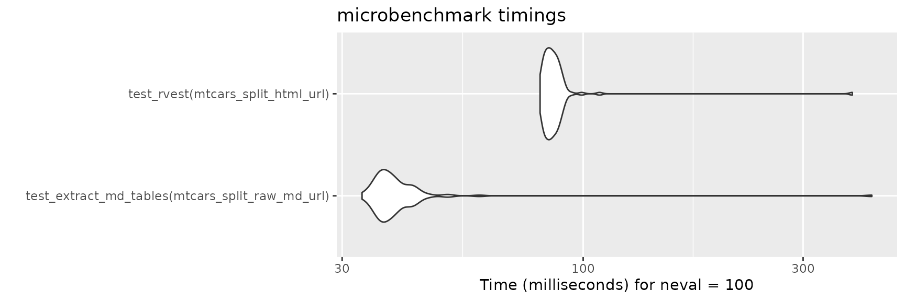
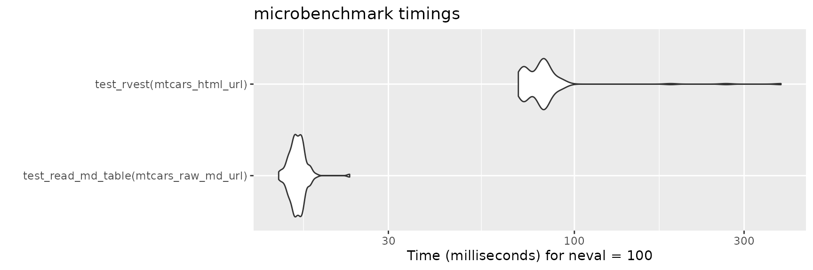
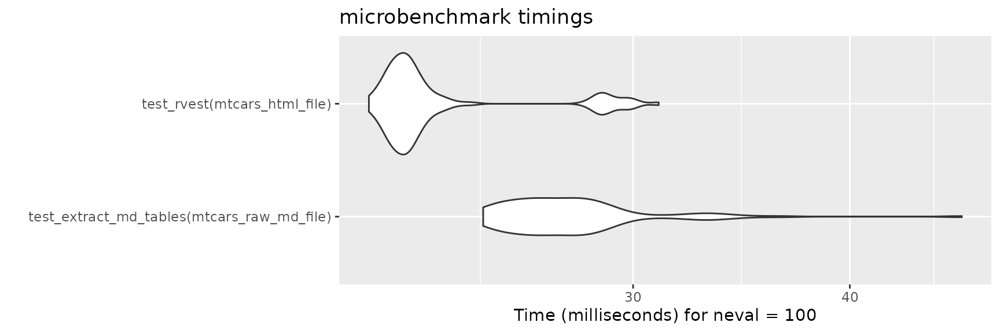
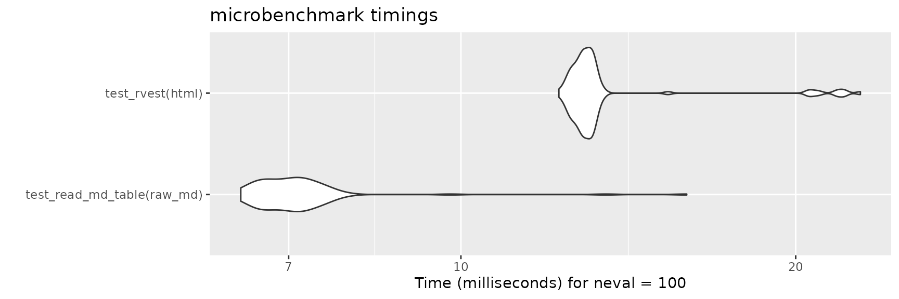

In many cases, both raw markdown files and their HTML-rendered equivalents are both available. For instance, GitHub repositories store raw markdown, but also render that markdown. In these cases, you have a choice between using readMDTable to parse the raw markdown, or rvest to parse the HTML. This vignette provides benchmarks to help you decide which is the better option for your use case.
The main benefit of readMDTable is that raw markdown is more lightweight that its HTML-rendered alternative, resulting in less retrieval time from the web. See the benchmarking below.
Functions Tested
test_extract_md_tables <- function(content) {
extract_md_tables(content, show_col_types = FALSE)
}
test_read_md_table <- function(content) {
read_md_table(content, show_col_types = FALSE)
}
test_rvest <- function(content) {
rvest::read_html(content) |> rvest::html_table()
}Benchmark 1
Comparing readMDTable and rvest on retrieving and parsing a markdown file with multiple tables and other non-table content.
mtcars_split_raw_md_url <- "https://raw.githubusercontent.com/jrdnbradford/readMDTable/refs/heads/main/inst/extdata/mtcars-split.md"
mtcars_split_html_url <- "https://github.com/jrdnbradford/readMDTable/blob/main/inst/extdata/mtcars-split.md"
resp <- microbenchmark::microbenchmark(
test_extract_md_tables(mtcars_split_raw_md_url),
test_rvest(mtcars_split_html_url),
times = 100
)
ggplot2::autoplot(resp)
Benchmark 2
Comparing readMDTable and rvest on retrieving and parsing a markdown table file.
mtcars_raw_md_url <- "https://raw.githubusercontent.com/jrdnbradford/readMDTable/refs/heads/main/inst/extdata/mtcars.md"
mtcars_html_url <- "https://github.com/jrdnbradford/readMDTable/blob/main/inst/extdata/mtcars.md"
resp <- microbenchmark::microbenchmark(
test_read_md_table(mtcars_raw_md_url),
test_rvest(mtcars_html_url),
times = 100
)
ggplot2::autoplot(resp)
Benchmark 3
Comparing readMDTable and rvest on parsing a markdown file with multiple tables and other non-table content, already retrieved and stored in memory.
mtcars_raw_md_file <- readr::read_file(mtcars_split_raw_md_url)
mtcars_html_file <- readr::read_file(mtcars_split_html_url)
resp <- microbenchmark::microbenchmark(
test_extract_md_tables(mtcars_raw_md_file),
test_rvest(mtcars_html_file),
times = 100
)
ggplot2::autoplot(resp)
Benchmark 4
Comparing readMDTable and rvest on parsing merely a markdown table, already retrieved and stored in memory.
raw_md <- readr::read_file(mtcars_raw_md_url)
html <- readr::read_file(mtcars_html_url)
resp <- microbenchmark::microbenchmark(
test_read_md_table(raw_md),
test_rvest(html),
times = 100
)
ggplot2::autoplot(resp)